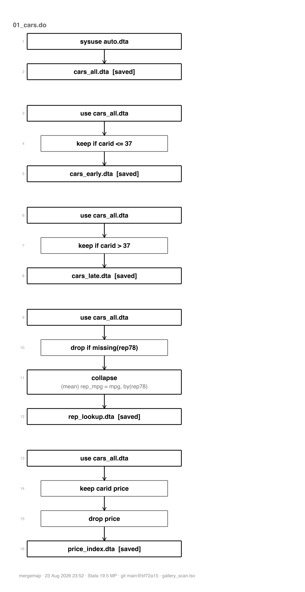
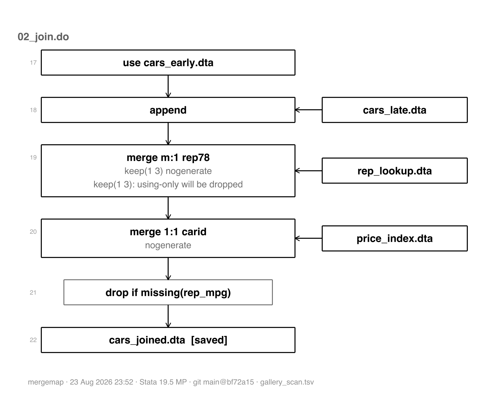
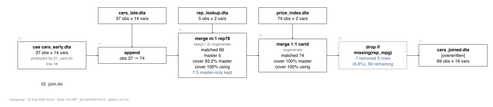

mergemap reads a series of Stata do-files and reports every merge, append, joinby, cross, frlink and frget in them, along with the keep and drop statements that change the row count around them. It executes nothing unless you ask it to. This page walks through each thing it produces, on a worked example of three small do-files that read Stata's auto data, trim it, join it, and save a summary. Every section shows the Stata code that made it; click a grey panel to unfold the code and its output.
Install and make the worked example yourself with:
. display as text "net install mergemap, from(" _char(34) "https://raw.githubus > ercontent.com/ericabooth/mergemap-stata-public/main/" _char(34) ") replace" net install mergemap, from("https://raw.githubusercontent.com/ericabooth/mergem > ap-stata-public/main/") replace . display as text "mergemap demo" mergemap demo
Point mergemap at do-files and it prints the receipt: a numbered table with one row per thing it found, in the order the code performs them, each with the file and line to go look at. Nothing is executed; the code is read as text. The same record is also written to a small tab-separated file called the journal, which every later command reads back.
. mergemap gdemo/01_cars.do gdemo/02_join.do gdemo/03_report.do, out(gallery_sc > an.tsv) 1 of 5 joins flagged: 1 warn. +-----------------------------------------------------------------------------+ | mergemap receipt: 3 do-files (33 events, scan mode - nothing executed) | +-----------------------------------------------------------------------------+ # file line command keys using/result F flags ------------------------------------------------------------------------------- 1 01_cars.do 9 sysuse auto.dta 2 01_cars.do 13 save cars_all.dta 3 01_cars.do 16 use cars_all.dta 4 01_cars.do 17 keep if carid <= 37 5 01_cars.do 18 save cars_early.dta 6 01_cars.do 20 use cars_all.dta 7 01_cars.do 21 keep if carid > 37 8 01_cars.do 22 save cars_late.dta 9 01_cars.do 25 use cars_all.dta 10 01_cars.do 26 drop if missing(rep78) 11 01_cars.do 27 collapse rep78 12 01_cars.do 28 save rep_lookup.dta 13 01_cars.do 31 use cars_all.dta 14 01_cars.do 32 keep vars carid price 15 01_cars.do 34 drop vars price 16 01_cars.do 35 save price_index.dta 17 02_join.do 4 use cars_early.dta 18 02_join.do 7 append cars_late.dta 19 02_join.do 10 merge m:1 rep78 rep_lookup.dta keep(1 3): using-only will be dropped 20 02_join.do 13 merge 1:1 carid price_index.dta 21 02_join.do 17 drop if missin...p_mpg) 22 02_join.do 19 save cars_joined.dta 23 03_report.do 4 sysuse census.dta 24 03_report.do 5 keep vars state ...on pop 25 03_report.do 6 save census...es.dta 26 03_report.do 9 use census...es.dta 27 03_report.do 10 collapse region 28 03_report.do 11 save region...ls.dta 29 03_report.do 13 use cars_joined.dta 30 03_report.do 14 merge m:1 region region...ls.dta keep(1 3): using-only will be dropped 31 03_report.do 19 merge m:m region census...es.dta !! m:m pairs rows by row order within key (not a join) 32 03_report.do 20 drop vars _merge 33 03_report.do 22 save demo_a...is.dta ------------------------------------------------------------------------------- 33 events. Severity: !! marks warn and stop. mergemap: 33 events written to gallery_scan.tsv
mergemap draw turns the most recent journal into a drawing. Small maps render right in the Results window; past eight join, reshape, and filter events, or for wide layouts, it writes an HTML page instead. Here the Results-window drawing is forced so you can see its style: boxes are datasets, arrows are the flow of data, joined-in files enter from the side, and slim boxes are keep and drop steps.
. mergemap draw gallery_scan.tsv, forcesmcl maxnodes(99) mergemap diagram: gallery_scan.tsv (scan mode - nothing executed; style: boxes) 01_cars.do -------------------------------------------------------------------- +----------------------------------+ | auto.dta | +----------------------------------+ | v +----------------------------------+ | cars_all.dta | [saved] +----------------------------------+ +----------------------------------+ | cars_all.dta | +----------------------------------+ | v [ keep if carid <= 37 ] | v +----------------------------------+ | cars_early.dta | [saved] +----------------------------------+ +----------------------------------+ | cars_all.dta | +----------------------------------+ | v [ keep if carid > 37 ] | v +----------------------------------+ | cars_late.dta | [saved] +----------------------------------+ +----------------------------------+ | cars_all.dta | +----------------------------------+ | v [ drop if missing(rep78) ] | v +------------------------------------------+ | collapse (mean) rep_mpg = mpg, by(rep78) | +------------------------------------------+ | v +----------------------------------+ | rep_lookup.dta | [saved] +----------------------------------+ +----------------------------------+ | cars_all.dta | +----------------------------------+ | v [ keep carid price ] | v [ drop price ] | v +----------------------------------+ | price_index.dta | [saved] +----------------------------------+ 02_join.do -------------------------------------------------------------------- +----------------------------------+ | cars_early.dta | +----------------------------------+ | | +----------------------------------+ | | cars_late.dta | | +----------------------------------+ | | | append <-----------------------+ | | +----------------------------------+ | | rep_lookup.dta | | +----------------------------------+ | | | merge m:1 rep78 <--------------+ | keep(1 3) nogenerate | keep(1 3): using-only will be dropped | | +----------------------------------+ | | price_index.dta | | +----------------------------------+ | | | merge 1:1 carid <--------------+ | nogenerate | v [ drop if missing(rep_mpg) ] | v +----------------------------------+ | cars_joined.dta | [saved] +----------------------------------+ 03_report.do ------------------------------------------------------------------ +----------------------------------+ | census.dta | +----------------------------------+ | v [ keep state region pop ] | v +----------------------------------+ | census_states.dta | [saved] +----------------------------------+ +----------------------------------+ | census_states.dta | +----------------------------------+ | v +---------------------------------------------+ | collapse (sum) region_pop = pop, by(region) | +---------------------------------------------+ | v +----------------------------------+ | region_totals.dta | [saved] +----------------------------------+ +----------------------------------+ | cars_joined.dta | +----------------------------------+ | | +----------------------------------+ | | region_totals.dta | | +----------------------------------+ | | | merge m:1 region <-------------+ | keep(1 3) nogenerate | keep(1 3): using-only will be dropped | | +----------------------------------+ | | census_states.dta | | +----------------------------------+ | | | merge m:m region <-------------+ | !! m:m pairs rows by row order within key (not a join) | v [ drop _merge ] | v +----------------------------------+ | demo_analysis.dta | [saved] +----------------------------------+
The HTML page is a single self-contained file: no internet connection, no JavaScript, no external assets. Hover any box for the full record of that event. The page below is embedded from the file the code panel writes; it scrolls in place.
. quietly mergemap draw gallery_scan.tsv, export(html) saving(g_map.html) repla
> ce noopen
A horizontal layout of the same map suits slides and wide screens:
. quietly mergemap draw gallery_scan.tsv, export(html) saving(g_map_h.html) lay
> out(horizontal) replace noopen
For a paper or a Word document, export(png) draws the map through Stata's own graph engine, so it needs nothing installed and matches your other figures' resolution handling. An SVG twin is written alongside each PNG. A map too dense for one readable image splits itself into one page per do-file, which is what happens here:
. mergemap draw gallery_scan.tsv, export(png) saving(g_map) replace
_mm_rendertw: page 1 has 15 join+transform+filter events, above this renderer's
> cap of 12.
a native-graph diagram this dense is not readable; use the HTML export inst
> ead:
. renderhtml using "gallery_scan.tsv", saving(diagram.html)
(or split it with page(dofile), or raise the cap with maxnodes(#))
mergemap draw: retrying with one page per do-file, page(dofile)
_mm_rendertw: wrote g_map_01_cars.png and g_map_01_cars.svg (vertical, 16 event
> s, 6 join+transform+filter)
_mm_rendertw: wrote g_map_02_join.png and g_map_02_join.svg (vertical, 6 events
> , 4 join+transform+filter)
_mm_rendertw: wrote g_map_03_report.png and g_map_03_report.svg (vertical, 11 e
> vents, 5 join+transform+filter)
_mm_rendertw: 3 pages, one per do-file


Mermaid and DOT are plain-text diagram languages: the export is a small text file naming the boxes and arrows, and other software draws it. Mermaid text renders by itself when pasted into GitHub, Quarto, VS Code, or mermaid.live, which makes it the right export when you want the map inside a README or a wiki instead of as an image file. DOT is the same idea in Graphviz's language. The diagram below is the mermaid export of the demo map, drawn live by this page:
. mergemap draw gallery_scan.tsv, export(mermaid) saving(g_map) replace _mm_rendertext: gallery_scan.tsv -> g_map_td.mmd g_map_td.md g_map_lr.mmd g_map > _lr.md . type g_map_td.mmd %%{init: {'theme':'base','themeVariables':{'fontFamily':'Helvetica, Arial, sans > -serif','fontSize':'14px','primaryColor':'#ffffff','primaryTextColor':'#20202 > 0','primaryBorderColor':'#606060','lineColor':'#606060','secondaryColor':'#f4 > f4f4','tertiaryColor':'#fafafa','clusterBkg':'#fbfbfb','clusterBorder':'#b0b0 > b0','edgeLabelBackground':'#ffffff','titleColor':'#202020'}}}%% %% mergemap _mm_rendertext 0.2.0 - journal gallery_scan.tsv - rendered 23 Aug 2 > 026 23:52:27 - Stata 19.5 MP - git main@bf72a15 flowchart TD accTitle: mergemap data-flow map of gallery_scan.tsv accDescr { 3 do-files, 18 dataset events, 5 joins and 8 filters, of which 1 are flagge > d. Boxes are datasets or the dataset in memory; edges carry the command, its > keys and its counts. Two exclamation marks flag an event that needs attention > . } classDef default fill:#ffffff,stroke:#606060,color:#202020; classDef mmfilter fill:#f4f4f4,stroke:#909090,color:#202020; classDef mmnote fill:#fafafa,stroke:#b0b0b0,color:#404040; classDef mmwarn fill:#ffffff,stroke:#4a6d8c,stroke-width:2.5px,color:#202020; classDef mmstop fill:#ffffff,stroke:#4a6d8c,stroke-width:4px,color:#202020; subgraph sg1["01_cars.do"] d1["auto.dta"] d2["cars_all.dta [saved]"] s4(["keep if carid #60;= 37"]) d3["cars_early.dta [saved]"] s7(["keep if carid > 37"]) d5["cars_late.dta [saved]"] s10(["drop if missing(rep78)"]) s11["collapse (mean) rep_mpg = mpg, by(rep78)"] d11["rep_lookup.dta [saved]"] s14(["keep vars carid price"]) s15(["drop vars price"]) d9["price_index.dta [saved]"] end subgraph sg2["02_join.do"] s18["work"] s19["work<br/>keep(1 3): using-only will be dropped"] s20["work"] s21(["drop if missing(rep_mpg)"]) d4["cars_joined.dta [saved]"] end subgraph sg3["03_report.do"] d6["census.dta"] s24(["keep vars state region pop"]) d7["census_states.dta [saved]"] s27["collapse (sum) region_pop = pop, by(region)"] d10["region_totals.dta [saved]"] s30["work<br/>keep(1 3): using-only will be dropped"] s31["work<br/>!! m:m pairs rows by row order within key (not a join)"] s32(["drop vars _merge"]) d8["demo_analysis.dta [saved]"] end d1 --> d2 d2 --> s4 s4 --> d3 d2 --> s7 s7 --> d5 d2 --> s10 s10 --> s11 s11 --> d11 d2 --> s14 s14 --> s15 s15 --> d9 d3 -- "append" --> s18 d5 --> s18 s18 -- "merge m:1 rep78<br/>keep(1 3) nogenerate" --> s19 d11 -. "using-only dropped by keep(1 3)" .-> s19 s19 -- "merge 1:1 carid<br/>nogenerate" --> s20 d9 --> s20 s20 --> s21 s21 --> d4 d6 --> s24 s24 --> d7 d7 --> s27 s27 --> d10 d4 -- "merge m:1 region<br/>keep(1 3) nogenerate" --> s30 d10 -. "using-only dropped by keep(1 3)" .-> s30 s30 -- "merge m:m region" --> s31 d7 --> s31 s31 --> s32 s32 --> d8 class s4 mmfilter; class s7 mmfilter; class s10 mmfilter; class s14 mmfilter; class s15 mmfilter; class s21 mmfilter; class s24 mmfilter; class s31 mmwarn; class s32 mmfilter; linkStyle 25,26 stroke:#4a6d8c,stroke-width:2px;
%%{init: {'theme':'base','themeVariables':{'fontFamily':'Helvetica, Arial, sans-serif','fontSize':'14px','primaryColor':'#ffffff','primaryTextColor':'#202020','primaryBorderColor':'#606060','lineColor':'#606060','secondaryColor':'#f4f4f4','tertiaryColor':'#fafafa','clusterBkg':'#fbfbfb','clusterBorder':'#b0b0b0','edgeLabelBackground':'#ffffff','titleColor':'#202020'}}}%%
%% mergemap _mm_rendertext 0.2.0 - journal gallery_scan.tsv - rendered 23 Aug 2026 23:52:27 - Stata 19.5 MP - git main@bf72a15
flowchart TD
accTitle: mergemap data-flow map of gallery_scan.tsv
accDescr {
3 do-files, 18 dataset events, 5 joins and 8 filters, of which 1 are flagged. Boxes are datasets or the dataset in memory; edges carry the command, its keys and its counts. Two exclamation marks flag an event that needs attention.
}
classDef default fill:#ffffff,stroke:#606060,color:#202020;
classDef mmfilter fill:#f4f4f4,stroke:#909090,color:#202020;
classDef mmnote fill:#fafafa,stroke:#b0b0b0,color:#404040;
classDef mmwarn fill:#ffffff,stroke:#4a6d8c,stroke-width:2.5px,color:#202020;
classDef mmstop fill:#ffffff,stroke:#4a6d8c,stroke-width:4px,color:#202020;
subgraph sg1["01_cars.do"]
d1["auto.dta"]
d2["cars_all.dta [saved]"]
s4(["keep if carid #60;= 37"])
d3["cars_early.dta [saved]"]
s7(["keep if carid > 37"])
d5["cars_late.dta [saved]"]
s10(["drop if missing(rep78)"])
s11["collapse (mean) rep_mpg = mpg, by(rep78)"]
d11["rep_lookup.dta [saved]"]
s14(["keep vars carid price"])
s15(["drop vars price"])
d9["price_index.dta [saved]"]
end
subgraph sg2["02_join.do"]
s18["work"]
s19["work
keep(1 3): using-only will be dropped"]
s20["work"]
s21(["drop if missing(rep_mpg)"])
d4["cars_joined.dta [saved]"]
end
subgraph sg3["03_report.do"]
d6["census.dta"]
s24(["keep vars state region pop"])
d7["census_states.dta [saved]"]
s27["collapse (sum) region_pop = pop, by(region)"]
d10["region_totals.dta [saved]"]
s30["work
keep(1 3): using-only will be dropped"]
s31["work
!! m:m pairs rows by row order within key (not a join)"]
s32(["drop vars _merge"])
d8["demo_analysis.dta [saved]"]
end
d1 --> d2
d2 --> s4
s4 --> d3
d2 --> s7
s7 --> d5
d2 --> s10
s10 --> s11
s11 --> d11
d2 --> s14
s14 --> s15
s15 --> d9
d3 -- "append" --> s18
d5 --> s18
s18 -- "merge m:1 rep78
keep(1 3) nogenerate" --> s19
d11 -. "using-only dropped by keep(1 3)" .-> s19
s19 -- "merge 1:1 carid
nogenerate" --> s20
d9 --> s20
s20 --> s21
s21 --> d4
d6 --> s24
s24 --> d7
d7 --> s27
s27 --> d10
d4 -- "merge m:1 region
keep(1 3) nogenerate" --> s30
d10 -. "using-only dropped by keep(1 3)" .-> s30
s30 -- "merge m:m region" --> s31
d7 --> s31
s31 --> s32
s32 --> d8
class s4 mmfilter;
class s7 mmfilter;
class s10 mmfilter;
class s14 mmfilter;
class s15 mmfilter;
class s21 mmfilter;
class s24 mmfilter;
class s31 mmwarn;
class s32 mmfilter;
linkStyle 25,26 stroke:#4a6d8c,stroke-width:2px;
And the DOT version of the same map, as text:
. mergemap draw gallery_scan.tsv, export(dot) saving(g_map) replace _mm_rendertext: gallery_scan.tsv -> g_map_tb.dot g_map_lr.dot . type g_map_tb.dot // mergemap _mm_rendertext 0.2.0 - journal gallery_scan.tsv - rendered 23 Aug 2 > 026 23:52:27 - Stata 19.5 MP - git main@bf72a15 // mergemap data-flow map of gallery_scan.tsv digraph mergemap { rankdir=TB; graph [fontname="Helvetica", fontsize=11, labeljust="l", labelloc="b", fontco > lor="#707070", label="mergemap _mm_rendertext 0.2.0 - journal gallery_scan.ts > v - rendered 23 Aug 2026 23:52:27 - Stata 19.5 MP - git main@bf72a15"]; node [shape=box, fontname="Helvetica", fontsize=10, color="#606060", fontcol > or="#202020"]; edge [fontname="Helvetica", fontsize=9, color="#606060", fontcolor="#202020" > ]; subgraph cluster_1 { label="01_cars.do"; color="#909090"; d1 [label="auto.dta"]; d2 [label="cars_all.dta [saved]"]; s4 [label="keep if carid <= 37", style=rounded]; d3 [label="cars_early.dta [saved]"]; s7 [label="keep if carid > 37", style=rounded]; d5 [label="cars_late.dta [saved]"]; s10 [label="drop if missing(rep78)", style=rounded]; s11 [label="collapse (mean) rep_mpg = mpg, by(rep78)"]; d11 [label="rep_lookup.dta [saved]"]; s14 [label="keep vars carid price", style=rounded]; s15 [label="drop vars price", style=rounded]; d9 [label="price_index.dta [saved]"]; } subgraph cluster_2 { label="02_join.do"; color="#909090"; s18 [label="work"]; s19 [label="work\nkeep(1 3): using-only will be dropped"]; s20 [label="work"]; s21 [label="drop if missing(rep_mpg)", style=rounded]; d4 [label="cars_joined.dta [saved]"]; } subgraph cluster_3 { label="03_report.do"; color="#909090"; d6 [label="census.dta"]; s24 [label="keep vars state region pop", style=rounded]; d7 [label="census_states.dta [saved]"]; s27 [label="collapse (sum) region_pop = pop, by(region)"]; d10 [label="region_totals.dta [saved]"]; s30 [label="work\nkeep(1 3): using-only will be dropped"]; s31 [label="work\n!! m:m pairs rows by row order within key (not a join)", > color="#4a6d8c", penwidth=2]; s32 [label="drop vars _merge", style=rounded]; d8 [label="demo_analysis.dta [saved]"]; } d1 -> d2; d2 -> s4; s4 -> d3; d2 -> s7; s7 -> d5; d2 -> s10; s10 -> s11; s11 -> d11; d2 -> s14; s14 -> s15; s15 -> d9; d3 -> s18 [label="append"]; d5 -> s18; s18 -> s19 [label="merge m:1 rep78\nkeep(1 3) nogenerate"]; d11 -> s19 [label="using-only dropped by keep(1 3)", style=dashed]; s19 -> s20 [label="merge 1:1 carid\nnogenerate"]; d9 -> s20; s20 -> s21; s21 -> d4; d6 -> s24; s24 -> d7; d7 -> s27; s27 -> d10; d4 -> s30 [label="merge m:1 region\nkeep(1 3) nogenerate"]; d10 -> s30 [label="using-only dropped by keep(1 3)", style=dashed]; s30 -> s31 [label="merge m:m region", color="#4a6d8c"]; d7 -> s31 [color="#4a6d8c"]; s31 -> s32; s32 -> d8; }
Everything above came from a scan, which reads code and never executes it, so it cannot know how many rows matched. Run mode executes the do-files with instrumentation around each join and records what actually happened: rows in and out, the _merge breakdown, duplicate keys, and what share of each side took part. Your results are unchanged; the wrappers call the real commands and pass every option through. The journal below was written before this page was built, by gallery_prep.do, because run mode and webdoc2 (the package that builds this page) both need control of how a do-file executes, so the two are kept apart.
The receipt from the run, now with counts:
. mergemap receipt gallery_run.tsv 3 of 5 joins flagged: 3 warn. plus 4 flagged event(s) outside the joins. +-----------------------------------------------------------------------------+ | mergemap receipt: gallery_run.tsv (31 events, existing journal) | +-----------------------------------------------------------------------------+ # file line command using/result n out F flags ------------------------------------------------------------------------------- 1 01_cars.do 13 save cars_all.dta 74 2 01_cars.do 16 use cars_all.dta 74 produced by 01_cars.do line 13 3 01_cars.do 17 keep if carid <= 37 37 removed 37 rows (50.0%), 37 remaining 4 01_cars.do 18 save cars_early.dta 37 5 01_cars.do 20 use cars_all.dta 74 produced by 01_cars.do line 13 6 01_cars.do 21 keep if carid > 37 37 removed 37 rows (50.0%), 37 remaining 7 01_cars.do 22 save cars_late.dta 37 8 01_cars.do 25 use cars_all.dta 74 produced by 01_cars.do line 13 9 01_cars.do 26 drop if missing(rep78) 69 removed 5 rows (6.8%), 69 remaining 10 01_cars.do 27 collapse 5 11 01_cars.do 28 save rep_lookup.dta 5 12 01_cars.do 31 use cars_all.dta 74 produced by 01_cars.do line 13 13 01_cars.do 32 keep carid price 74 removed 12 variables, 2 remaining 14 01_cars.do 34 drop price 74 removed 1 variables, 2 remaining 15 01_cars.do 35 save price_...x.dta 74 16 02_join.do 4 use cars_early.dta 37 produced by 01_cars.do line 18 17 02_join.do 7 append cars_late.dta 74 18 02_join.do 10 merge m:1 rep_lookup.dta 74 5 master-only kept 19 02_join.do 13 merge 1:1 price_...x.dta 74 20 02_join.do 17 drop if missin..._mpg) 69 removed 5 rows (6.8%), 69 remaining 21 02_join.do 19 save cars_j...d.dta 69 22 03_report.do 5 keep state ...n pop 50 removed 10 variables, 3 remaining 23 03_report.do 6 save census...s.dta 50 24 03_report.do 9 use census...s.dta 50 produced by 03_report.do line 6 25 03_report.do 10 collapse 4 26 03_report.do 11 save region...s.dta 4 27 03_report.do 13 use cars_j...d.dta 69 produced by 02_join.do line 19 28 03_report.do 14 merge m:1 region...s.dta 69 !! key type drift: region: byte vs int 29 03_report.do 19 merge m:m census...s.dta 69 !! m:m pairs rows by row order within key (not a join) 30 03_report.do 20 drop _merge 69 removed 1 variables, 19 remaining 31 03_report.do 22 save demo_a...s.dta 69 ------------------------------------------------------------------------------- 31 events. Severity: !! marks warn and stop.
The same map, drawn with the counts in it:
. quietly mergemap draw gallery_run.tsv, export(html) saving(g_map_run.html) re
> place noopen
The run map also draws through Stata's own graph engine, laid out horizontally: one row of boxes per do-file, at a shape that drops into a slide or a wide page. A dense map splits itself into one page per do-file, and the page below is the second one, where the joins happen:
. mergemap draw gallery_run.tsv, export(png) saving(g_run_h) layout(horizontal)
> replace
_mm_rendertw: page 1 has 15 join+transform+filter events, above this renderer's
> cap of 12.
a native-graph diagram this dense is not readable; use the HTML export inst
> ead:
. renderhtml using "gallery_run.tsv", saving(diagram.html)
(or split it with page(dofile), or raise the cap with maxnodes(#))
mergemap draw: retrying with one page per do-file, page(dofile)
_mm_rendertw: wrote g_run_h_01_cars.png and g_run_h_01_cars.svg (horizontal, 15
> events, 6 join+transform+filter)
_mm_rendertw: wrote g_run_h_02_join.png and g_run_h_02_join.svg (horizontal, 6
> events, 4 join+transform+filter)
_mm_rendertw: wrote g_run_h_03_report.png and g_run_h_03_report.svg (horizontal
> , 10 events, 5 join+transform+filter)
_mm_rendertw: 3 pages, one per do-file

One event in depth, straight from the journal:
. mergemap detail 6 gallery_run.tsv event 6: keep if (01_cars.do line 21) -------------------------------------------------------------- class filter result work rows 74 -> 37 vars 14 -> 14 options if carid > 37 severity warn flags removed 37 rows (50.0%), 37 remaining --------------------------------------------------------------
mergemap sql is for the moments when you, a student, or a collaborator from the R or Python side needs to see what a Stata merge form does to rows. It prints a table matching each Stata form to its name in SQL, dplyr, and pandas, and draws any form as a worked example: two toy tables, the command, and the result, with the rule for how many rows come out. The subcommand is named sql because that is where the shared join vocabulary comes from; nothing about it requires SQL, and it never touches your data.
. mergemap sql mergemap sql: what each Stata form is, in three other languages Stata SQL dplyr p > andas how= ----------------------------------------------------------------------------- --------------- merge 1:1 k using B FULL OUTER JOIN full_join o > uter merge .., keep(3) INNER JOIN inner_join i > nner merge .., keep(1 3) LEFT JOIN left_join l > eft merge .., keep(2 3) RIGHT JOIN right_join r > ight merge .., keep(1) anti join anti_join l > eft_anti merge m:1 k using B many-to-one lookup left_join v > alidate m:1 merge 1:m k using B one-to-many fan-out left_join v > alidate 1:m merge m:m k using B (no equivalent: not a join)-- > -- joinby k using B INNER JOIN, dup keys inner_join v > alidate m:m cross using B CROSS JOIN cross_join c > ross append using B UNION ALL (by name) bind_rows c > oncat frlink m:1 k, frame(B) declares the FK join_by - > - frget v, from(lnk) LEFT JOIN projection left_join l > eft collapse (mean) x, by(k) GROUP BY summarise g > roupby.agg reshape long / wide UNPIVOT / PIVOT pivot_longer/widerm > elt / pivot ----------------------------------------------------------------------------- --------------- Pictures, one per form: . mergemap sql full the default merge (full outer join) . mergemap sql left merge m:1 .., keep(1 3) (a left join) . mergemap sql inner merge .., keep(3) . mergemap sql fanout merge 1:m (one row becomes many) . mergemap sql joinby the real many-to-many . mergemap sql append stacking, not joining . mergemap sql cross every row against every row . mergemap sql mm merge m:m, the warning case
One form drawn as a worked example. The m:m case reads as a warning on purpose: merge m:m pairs rows by the order they happen to be in, and joinby is the true many-to-many:
. mergemap sql joinby mergemap sql: joinby id using B (the real many-to-many) within each key, every master row is paired with every using row: a cross product inside the key master using result +------------+ +------------+ +------------------+ | id x | | id y | | id x y | | 1 a | | 1 p | | 1 a p | | 1 b | | 1 q | | 1 a q | +------------+ +------------+ | 1 b p | | 1 b q | +------------------+ size rule, per key: rows = rows(master) x rows(using); 4 = 2 x 2 2 rows and 2 rows made 4: joins can multiply, which is why mergemap reports row multiplication on every joinby SQL: INNER JOIN, dup keys | dplyr: many-to-many | pandas: validate="m:m"
The same diagram is available for your own joins: mergemap detail with the draw option takes one event from the journal and draws its row pairing with the observed counts in place of the toy rows.
. mergemap detail 6 gallery_run.tsv, draw event 6: keep if (01_cars.do line 21) -------------------------------------------------------------- class filter result work rows 74 -> 37 vars 14 -> 14 options if carid > 37 severity warn flags removed 37 rows (50.0%), 37 remaining -------------------------------------------------------------- mergemap detail, draw diagrams join events; event 6 is a filter
A real build can record thousands of events, and most of them are not joins. The journal and the receipt always keep every event; the drawing is where you choose what to look at. Each option hides one kind of event, the options combine, and draw prints a line saying exactly what it hid. filesonly leaves the joins between named files; an if on the journal's own columns cuts any way the record can be sliced; paths(base) and root() shorten long file paths in the labels.
. quietly mergemap draw gallery_run.tsv, filesonly export(html) saving(g_map_fi > les.html) replace noopen . display as text "hidden: " r(hidden) hidden: hidden: 2 transforms, 8 filters (4 on rows, 4 on variables); 21 of 31 e > vents drawn
The record itself is never cut. Export it whole, as a dataset or as a three-sheet Excel workbook (every event; the joins with their counts; every keep and drop with the rows it removed), sortable and filterable in Excel:
. mergemap export gallery_run.tsv, saving(g_journal.xlsx) replace mergemap export: 31 events from gallery_run.tsv to g_journal.xlsx sheets: events (31), joins (5), filters (8)
This page was generated by gallery.do in the mergemap repository, using the webdoc2 package. See the README for installation and the help file (help mergemap) for every option.